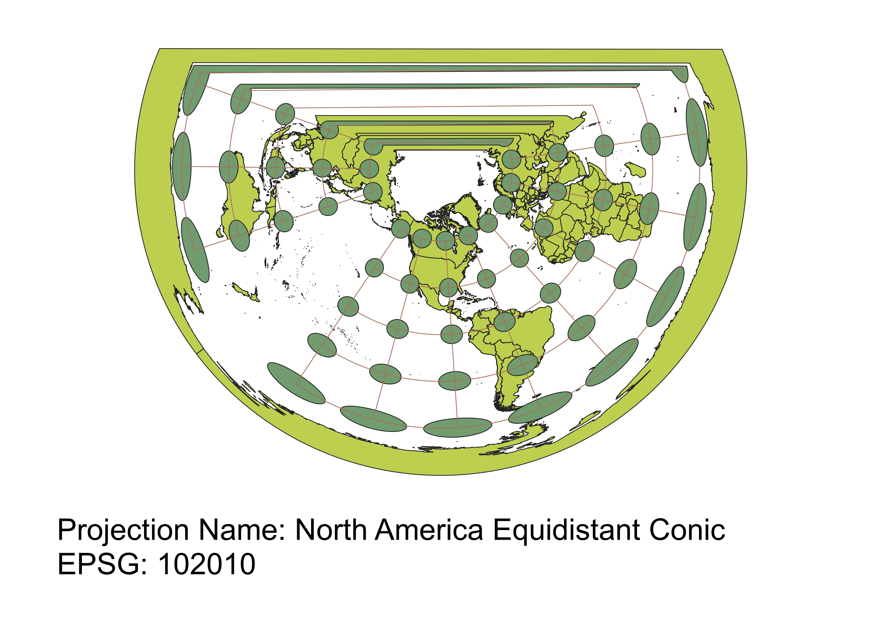

In this project I learned how to display images in different projections.
To display different projections of the world map, I started by adding the map as a vector using the data from Natural Earth. Then, at the bottom right of the screen in QGIS, I clicked on the Project Coordinate Reference System (CRS) button. By typing the projection names I was looking for into the search feature, I found the projection I was looking for. Clicking “ok” after selecting the projection closes the Project Properties window and displays the map in the projection I chose.
WGS84 Projection
Observations: In this projection, both area and shape become increasingly distorted when moving from the equator to the poles. Specifically, the poles become larger and more flattened horizontally. Although multiple attributes are distorted, the distortion of each one is more balanced than in some other projections.

Aitoff Projection
Observations: This projection becomes more distorted the further you move away from the intersection of the equator and Prime Meridian. Towards the poles and toward either side of the Prime Meridian, the indicatrix circles become larger and more vertically stretched.

Pseudo Mercator
Observations: This is a cylindrical projection where the shape of the land is preserved, as indicated by the shape of the indicatrix circles. This means it is a conformal projection. However, the circles get larger moving to the poles from the matrix which shows that the area is distorted, with Greenland being particularly distorted and appearing very large.
Sphere Winkel I
Observations: The shape of the land is best preserved at the northernmost and southernmost indicatrix circles on the Prime Meridian. Area at the poles appears larger. Additionally, the shape is more distorted in the south than in the north, as indicated by the vertically stretched circles near the southern pole.
World Cylindrical Equal Area
Observations: Most indicatrix circles reveal shape distortion, with the majority of them being stretched vertically. There is also some distortion of area, with the poles appearing larger.

World Equidistant Conic
Observations: This conical projection does not attempt to balance distortions. The further you move south, the area becomes very large and the shape becomes very flattened. However, the appearance of the north of the globe is more preserved. There is also a “gap” where the edges of the cone do not meet.
North Pole Azimuthal Equidistant
Observations: Unlike the World Equidistant Conic projection, this conic projection is continuous. It has the appearance of looking down on the globe from the north pole, and both area and shape become distorted (enlarged and flattened) the further you move toward the poles.
World Times
Observations: Shape is preserved fairly well across the globe in this projection, with minor vertical stretching towards the equator. The northernmost row of indicatrix circles preserve shape slightly more than the southernmost row. The poles are also enlarged.
North America Equidistant Conic
Observations: This conic projection makes no attempt to balance distortions among size and shape, but rather to preserve North America. From North America, moving south results in extreme size increase and horizontal flattening. The eastern hemisphere is nearly unrecognizable as it is highly stretched, as indicated by the indicatrix “circles” appearing more rod-like at the top of this map.

Data used for this project
Download Natrual Earth 1:10m Cultural Vector